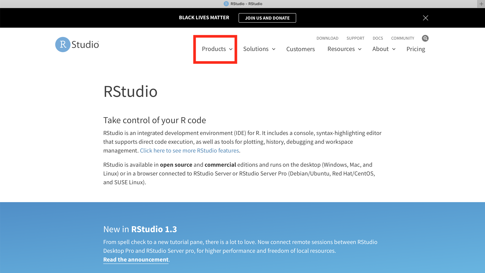
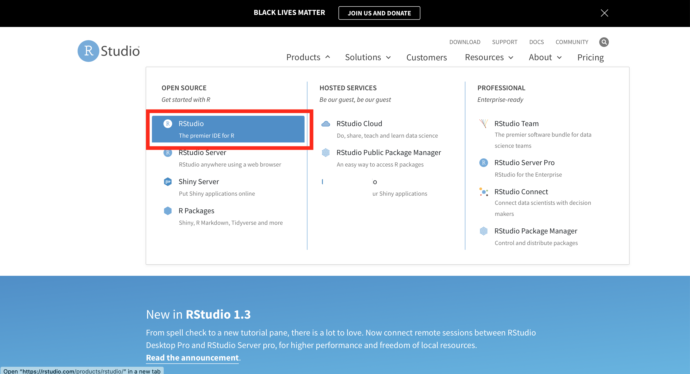
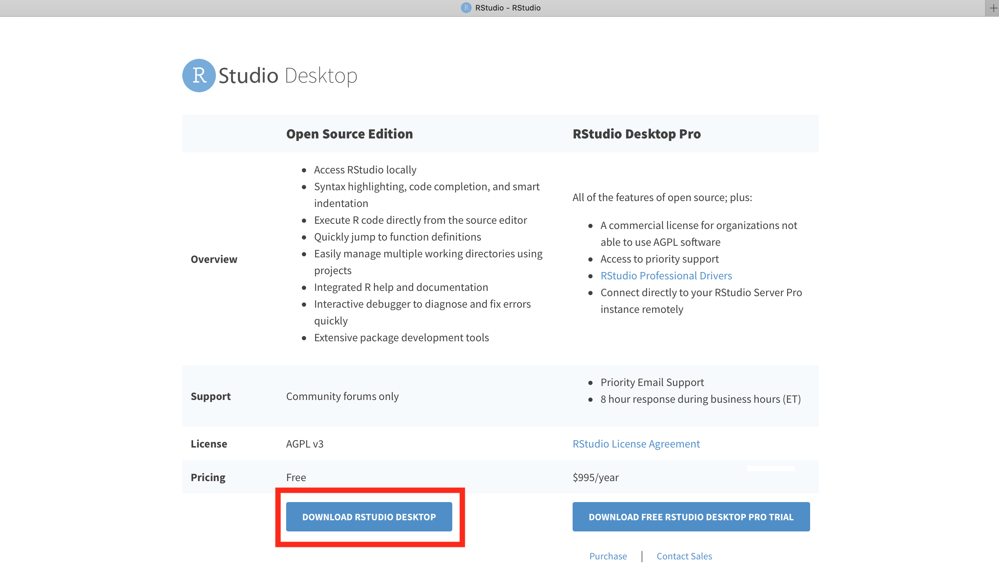
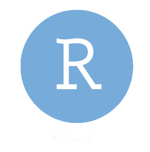

Chapter 3 Installing R and R Studio
To use R on your machine you will need to download and install both it and RStudio. R is the ‘engine,’ the statistical software that actually does all the data manipulation and calculations, while RStudio is the ‘IDE,’ or ‘Integrated Development Environment.’ It is the application through which you actually use R. While it is not necessary to use RStudio, doing so makes using R so much easier that pretty much everyone uses it now, and I advise you to do so too.
3.0.1 Getting R
Download it from the CRAN page at
cloud.r-project.orgCRAN page
Click on the appropriate download link for your operating system and follow the installation instructions.
3.0.2 Getting RStudio
Do this after you have downloaded R.
Download it from
https://rstudio.com/products/rstudio/When you are there, click on Products 
then on RStudio 
then RStudio Desktop…

then download the Open Source Edition  and finally follow the installation instructions, appropriate for your machine.
3.0.3 What to open and what not to open
Once the download and installations are complete, you will see these icons on your machine:

Never open the R icon (left), always open the R Studio icon (right).